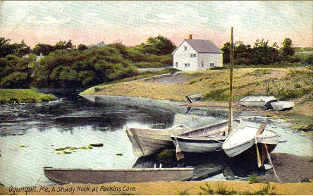

In the 19th century, boat building varied along the Atlantic Coast depending on the ocean, the livelihood of the fishermen and the preferences of local boat builders. The famous Ogunquit Dory was unique to its own village. Ogunquit dories accommodated the rocky coast and strong tides. They were built for trawling and lobstering and varied in length from about 16 feet to about 21 feet. In the 18th and 19th century, fishermen and schooners plied their trade along the Ogunquit River. Fishermen's shacks and wharves were dotted along what is still today named Wharf Lane. Among these small buildings was the boat house of William Henry Perkins. In his youth, William Henry had gone to sea on a fishing schooner. While fishing along the Grand Banks, William Henry became familiar with the banks dory. The flared straight sides of the banks dory permitted these boats to be stacked inside one another, and when necessary they could be hoisted in and out of the schooner. When William Henry's group of dories was fishing, his dory became separated from the others in the fog. Miraculously he made his way back to Halifax and then back to Ogunquit where he began to build dories. Consequently, his dories had a bow and stern similar to the banks dory but they had a very wide middle section (beam) typical of the local fishing vessels. This extra space allowed room for lobster traps or extra trawling equipment necessary for offshore work. They were sturdy vessels that Ogunquit's fishermen used well into the 19th century until they gradually disappeared. Because these dories are legendary and are a part of our coastal history, we yearned to duplicate one of them. After much research and labor, our duplicate dory was built and launched in 2008. It now resides either in front of the Museum or moored in Perkins Cove.